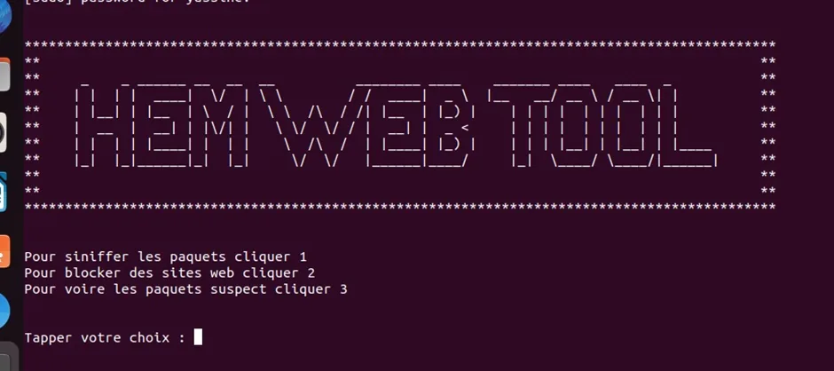
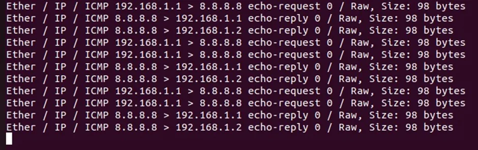
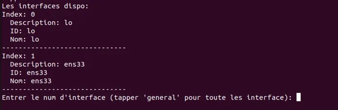

Network Security Tool
An advanced Python script leveraging Scapy for packet sniffing, website blocking, and detecting suspicious network traffic.
Explore Features
Project Overview
This project is a Python-based command-line tool created for educational purposes to explore network security functionalities. Using the Scapy library, it can sniff packets, block websites, and log suspicious network packets. It’s a great demonstration of Python's power in networking and cybersecurity tasks.
- Provides packet sniffing capabilities with detailed summaries.
- Detects suspicious TCP packets with SYN and FIN flags set.
- Blocks access to specified websites by editing the hosts file.
- Logs and displays suspicious packets for further analysis.
Key Features
- Packet Sniffing: Monitors network traffic and displays packet summaries, including size and protocol details.
- Suspicious Packet Detection: Identifies TCP packets with both SYN and FIN flags set, marking them as unusual.
- Website Blocking: Allows the user to block websites by adding entries to the hosts file.
- Logging: Logs suspicious packets to a file for review and further analysis.
Gallery
Below are screenshots demonstrating the tool's functionalities:

Home Page

Interface selction

Packets